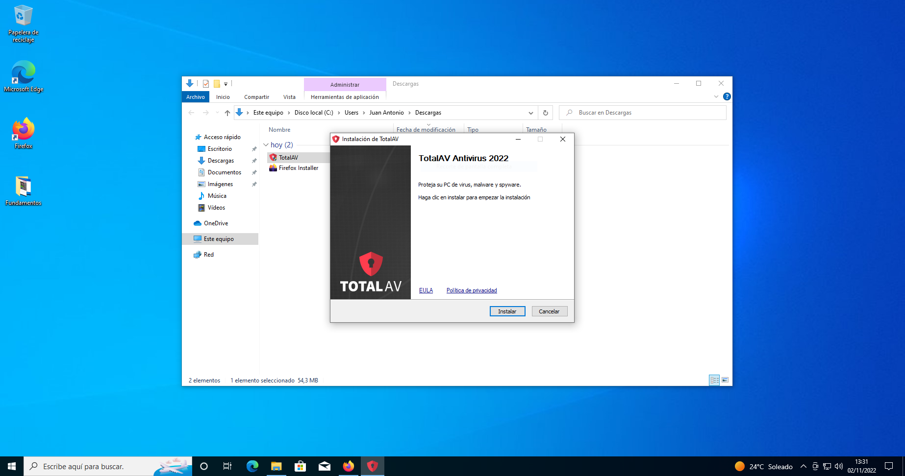
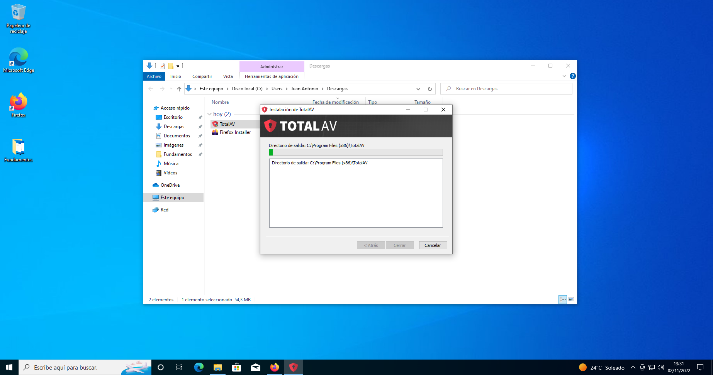
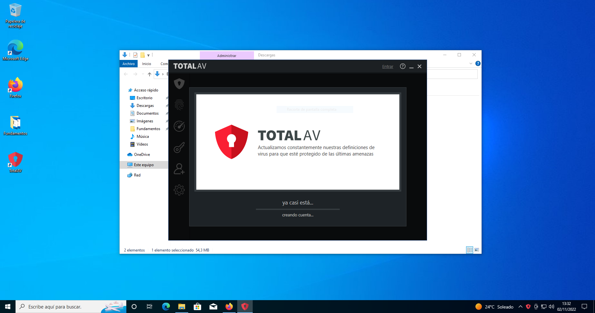
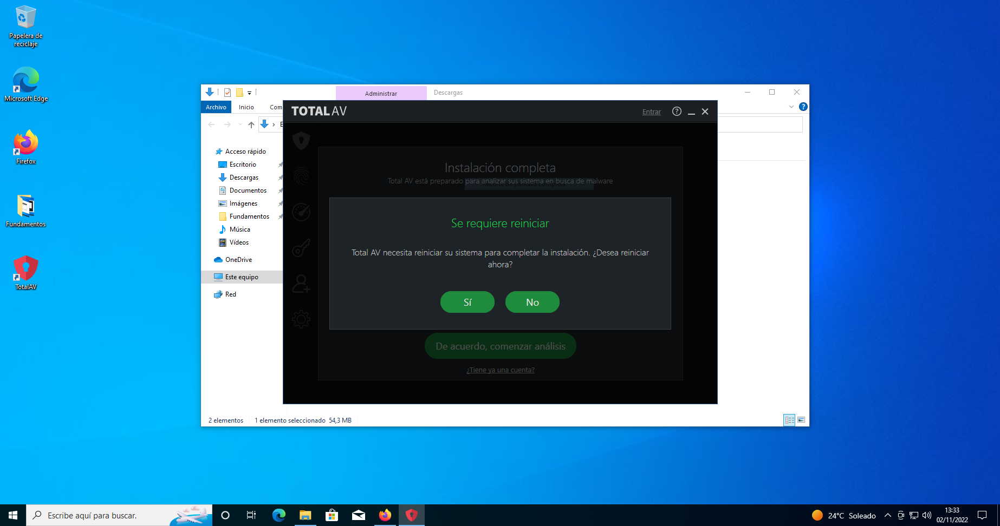
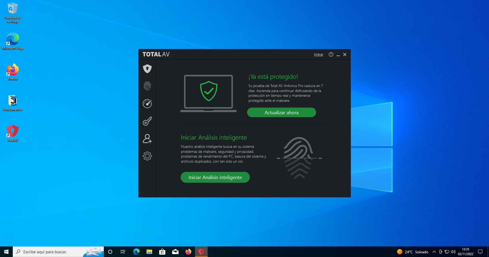

En esta página se va a presentar como se hace la instalación del AntiVirus "TotalAV" en Windows y sus diferentes pasos
Clickamos en el primer enlace que nos aparece. Con él accederemos a la pagina que se presenta en la siguiente foto.
Al abrir esta pagina pulsamos sobre el botón verde que dice descargar gratis. Tener en cuenta que esta descarga es para Windows
Comenzará la descarga del instalador, cuando esté instalado tendremos que ir a donde se haya descargado
Hacemos doble click sobre sobre el icono de TotalAV como se ve en la foto y así entraremos en el instalador

Cuando hayamos clickado se habrá abierto esta pestaña en la que tenemos que hacer click en "Instalar" y habrá comenzado la instalación de dicho programa
Habrá comenzado la instalación como se ve en la foto cuando esta se haya completado seguiremos con la instalación como se indica en el 5º paso
Si se ha instalado correctamente se debería abrir la aplicación de igual forma que se presenta en la foto
Cuando ya se haya instalado todo correctamente te pedirá reiniciar como vemos en la foto. Clickamos en el botón de "Sí"
Puesto que si no hacemos esto no se instalaría como es debido, ya que la aplicación requiere reiniciar el ordenador para su completa y correcta instalación
Este es el último paso de la instalación. Si todo se ha hecho correctamente y siguiendo las pautas dadas en la instalación debería de aparecer esta pestaña al reiniciar
Si esto aparece es porque la instalación se ha hecho bien y el AntiVirus estaría bien instalado en nuestro ordenador y funcionando correctamente
Instalación terminada y con éxito si se han seguido los pasos citados